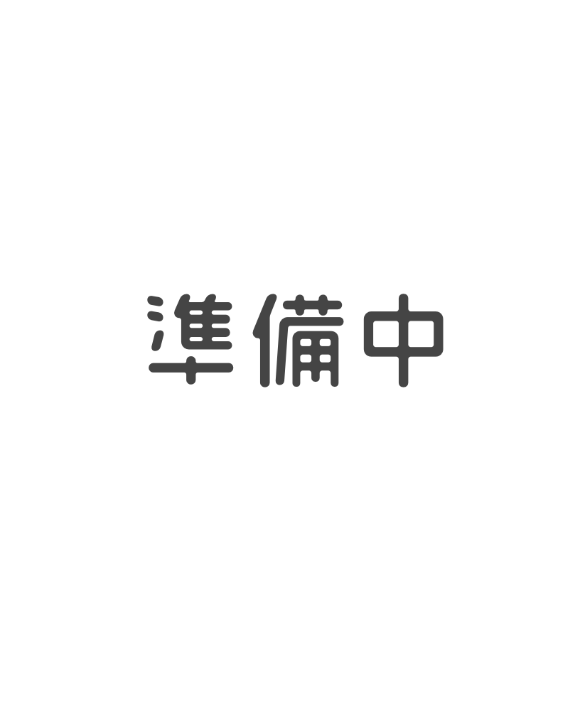
ASH JOURNEY
宮薙 千秋 MIYANAGU CHIAKI
24歳 / 177cm / 68kg / A型 /殺し屋
物静かで真面目な青年。
面倒見が良く、アスハのことを放っておけないが振り回されがち。
チョコレートとタバコとコーヒーが好き。
ORIGINAL CHARACTER
オリジナル作品に登場するキャラクターたち。

ASH JOURNEY
24歳 / 177cm / 68kg / A型 /殺し屋
物静かで真面目な青年。
面倒見が良く、アスハのことを放っておけないが振り回されがち。
チョコレートとタバコとコーヒーが好き。

ASH JOURNEY
13歳 / 148cm / 42kg / O型 / 宮薙の助手
無邪気な笑顔と危うさを併せ持つ少女。
宮薙と行動を共にしている。
甘いものやドーナツ、可愛いものが好き。
虫が苦手。
学校には行っていない。

SUMMER GIRL BLUE
17歳 / 174cm / 55kg / B型 / 2月16日 /高校生
クールで少し素直になれない高校生。
過去の恋を引きずっている。
錆山県立 柳城高校２年４組。
バイトと邦ロックとゲームが好き。
甘党でコーヒー牛乳が好き。運動が得意。
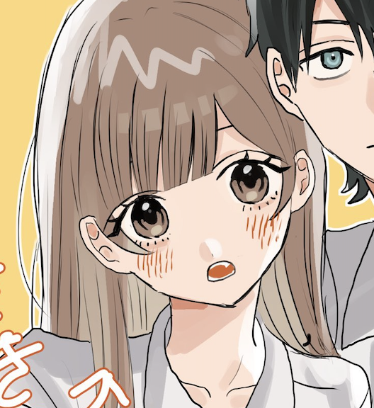
SUMMER GIRL BLUE
17歳 / 163cm / 48kg / A型 / 4月16日 /高校生
明るくまっすぐな少女。
錆山県立 柳城高校２年４組
同じクラスの慶崎のことが大好き。
甘党でパフェやいちごミルクが好き。
ピンク・うさぎ・サメモチーフのものを好む。
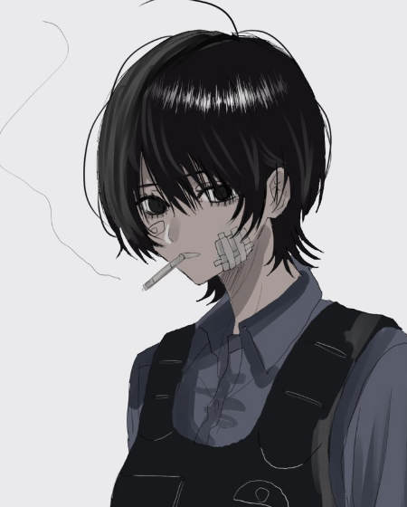
SECRET BLACK
19歳 / 170cm / 警察官
真面目で面倒見のよい新人警察官。
少し不器用な一面もある。
タバコとコーヒーが好き。
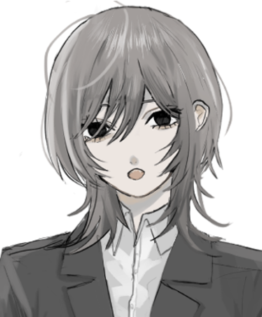
八丸技研
28歳 / 174cm / アンドロイド研究者
八丸技研機械開発部。
不思議でダウナーな上司。
アンドロイドや重機を開発している。
ビールと煙草が好き。
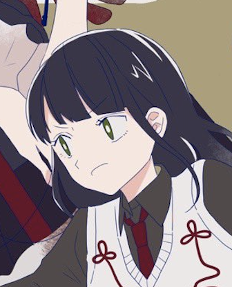
鬼灯
16歳 / 158cm / 高校生
通称あかりちゃん。
白咲のクラスメイト。保健委員。
成績は中の中。
勉強はあまり得意じゃないけど本当は頑張り屋さん。
照れ屋で霊感持ち。
辛党で辛口ラーメンとメロンソーダが好き。
密かに鬼丸のことが好き。
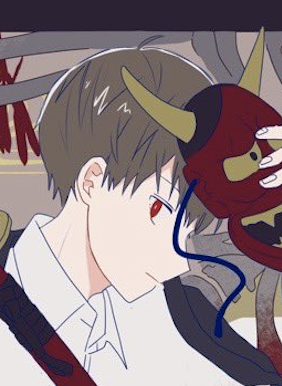
鬼灯
17歳 / 174cm / 高校生
通称鬼丸くん。
白咲のクラスメイト。
気さくで絵に描いたような優等生。
保健委員長。
オカルトや怪談が大好き。
辛いものと肉が大好き。
密かにあかりのことが好き。
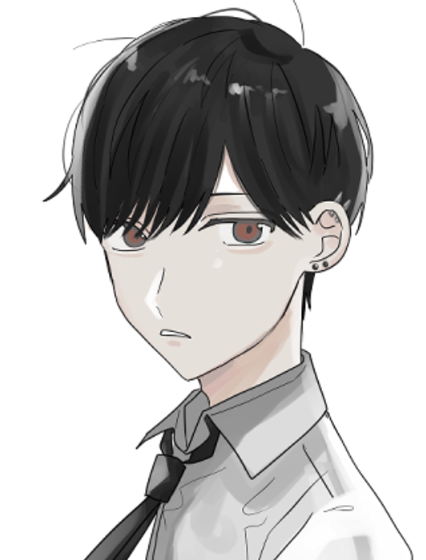
凪坂くんはなびかない
16歳 / 174cm / 高校生
白咲のクラスメイト。
女性が苦手で攻撃的。
成績は上。
鬼丸とは塾が同じ。
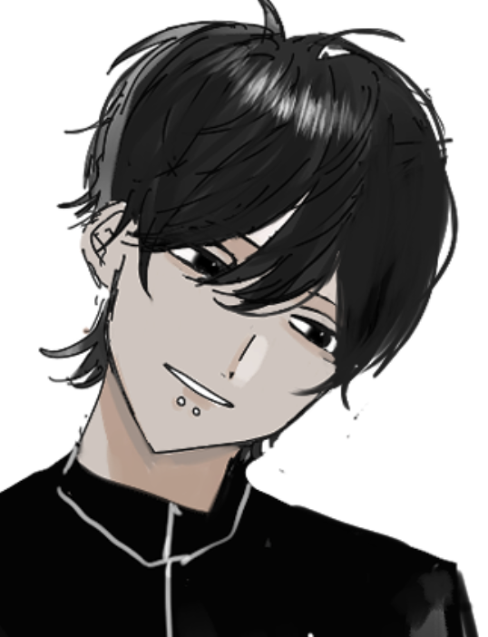
凪坂くんはなびかない
17 / 175cm / 高校生
咬谷の弟。
彼女が二人いる。
人の気持ちを考えるのが苦手。
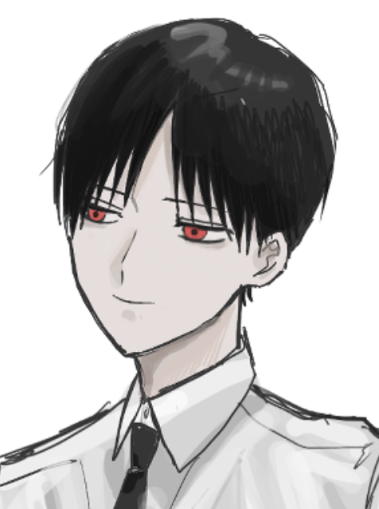
八丸エンディングプランナー
24 / 175cm / 葬儀屋
エンディングプランナー。
凪坂の兄。
宮薙とは幼馴染。
地雷系サブカル彼女がいる。
＋イモウトセンセーション
14 / 148cm / 中学生
通称「めんこ」。
ライトノベルに出てくる妹キャラに憧れている。
兄の事が大好き。
料理も好き。
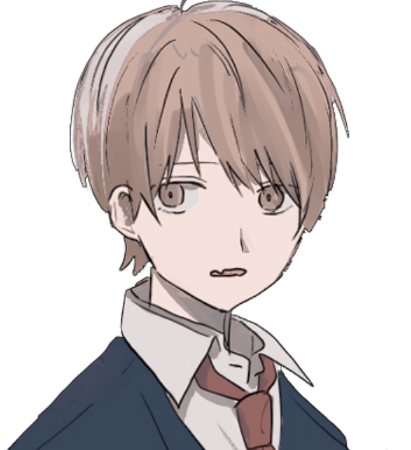
＋イモウトセンセーション
18歳 / 175cm / 高校生
めんこの兄。
めんこの事が苦手。
世話焼きで料理が好き。
神経質。
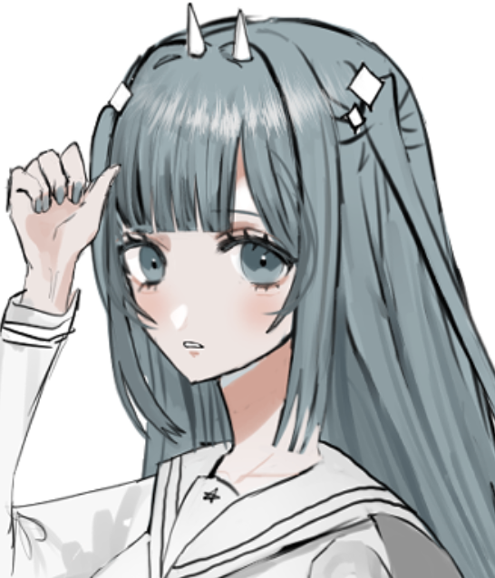
＋イモウトセンセーション
18歳 / 168cm / 高校生
通称・一人称が「イカリ」。
めんことは友達で、仲が良い。
理玖のクラスメイト。
ミステリアスな不思議ちゃん。
白いツノのカチューシャは「イカリ」と「怒り」をかけた鬼のツノという本人渾身のギャグ。